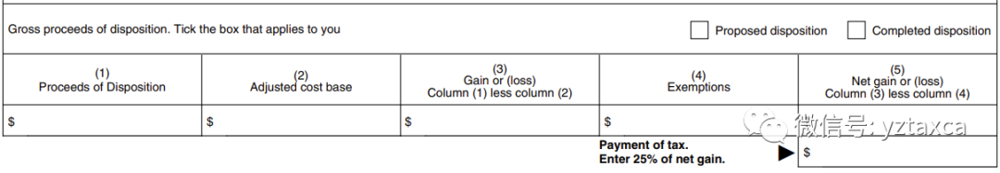
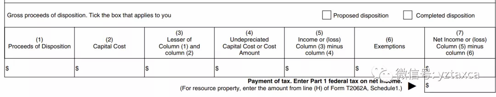

全面解析非税务居民的“清税证明”
1. 非税务居民报税的基本过程：
(1)非税务居民在出售加拿大的房产或楼花时，律师会hold卖价的25%, 这个钱会存入律师的Trust账户。
(2)在final closing date的10天之内，卖家需要找会计师或者精通税法的律师递交“清税证明”Certificate of Compliance T2062和或T2062A表格。务必保证CRA在10天之内收到这个申请，要不然会按照迟交的天数计算罚金。
(3)历尽数月的处理，律师在收到“清税证明”Certificate of Compliance之后，会按照"（卖价 - 买价）*25%的比例"向税务局交withholding tax，这笔钱并不是因为房屋买卖最终需要交的税款。
(4)第二年卖家需要递交上一年的非税务居民报税表格进行报税，此时会考虑卖房的费用比如地产经纪佣金，律师费，卖房前的装修费等。按照 （卖价 - 买价 - 卖房费用）*50% * （收入相对应的联邦税率 plus sur-tax 48%相对应缴纳的省税）计算应纳税额。再考虑（2）已经缴纳的withholding tax 多退少补。
2. 两种情况分别如何申报“清税证明”：
情况1.卖出的房屋之前只是自住或者报出租时没有申报房屋的折旧。
举例：
小明在2012年获得永久居民身份之后来到加拿大，随即在多伦多购入房产自住，买价是30万。
2015年小明回流中国，此时房屋的价值是40万（根据房产经纪提供的当时周围同类房屋的卖价报告，40万的市值被税务局认可）。
之后房屋被整套出租但是出来没有申报过房屋的折旧。
2018年，小明将此套房屋卖出，卖价是100万。
小明应该这样填写“清税证明”表格：
1) T2062表格：

(1) 卖价：100万
(2）这里的Adjusted cost base是2015年的40万。因为2015年小明回流中国，如果不考虑其他因素的情况下，他在加拿大的税务身份从税务居民转变成了非税务居民。2012年-2015年按照税务居民自住的情况下，房屋的增值不用交税。所以，按照2015年转为非税务居民时，房屋的市场价值作为adjusted cost base，即40万作为计税的基数。
(3) Gain gain 100 - 40 = 60万
(5) Net gain 60万
60 * 25% = 15万 withholding tax 预交给税务局
2) T2062A表格
（1）Procceds卖价：100万

（2) Capital gain 2012年买价：30万
（3）两者的孰低是30万
（4）UCC是税法概念上房屋的价值。因为这个房子没有申报过折旧，所以此时UCC等同于房屋的买价，30万
（5） （3）- （4）是 30 - 30 等于 0
（7） Net income是 0。即因为房屋之前没有申报过折旧，此时没有产生recapture，不需要为此交withholding tax。
（1）+（2）= 15万 + 0 = 15万 是全部需要预交的withholding tax。
情况2.以上情况都不变，只是小明报出租时申报了房屋的折旧，比如5万。
小明应该这样填写“清税证明”表格：
1) T2062表格：
(1) 卖价：100万
(2）这里的Adjusted cost base是2015年的40万。原因如上。
(3) Gain gain 100 - 40 = 60万
(5) Net gain 60万
60 * 25% = 15万 withholding tax 预交给税务局
2) T2062A表格
（1）Procceds卖价：100万
（2) Capital gain 2012年买价：30万
（3）两者的孰低是30万
（4）UCC是税法概念上房屋的价值，因为这个房子申报过5万的折旧，所以此时UCC是30万减去5万等于25万。
（5） （3）- （4）是 30 - 25 等于 5万
（7） Net income是 5万。即因为以前申报了5万的房屋折旧，产生了5万的recapture，为此需要预交的withholding tax = 5 * 25% = 1.25万。
（1）+（2）= 15万 + 1.25万 = 16.25万 是全部需要预交的withholding tax。
在税务局处理“清税证明”时候，需要一同递交：
1: 由房产经纪公司出具2015年小明回流中国时，房屋的市场价值。通常是按照当年周围同类房屋的实际成交价格计算。
2. 递交2015年-2017年出租收入的报税明细表格T776。税务局会根据这个表格来确定是否房屋之前申报了折旧，从而计算是否要为recapture交withholding tax。